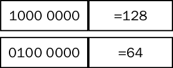
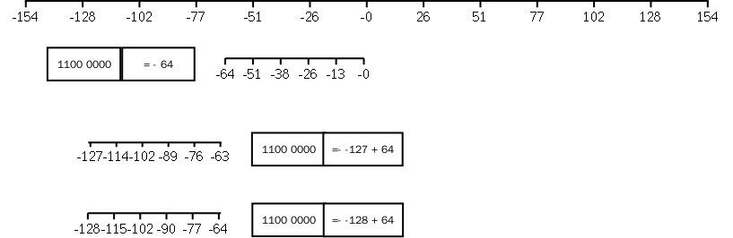
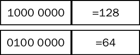
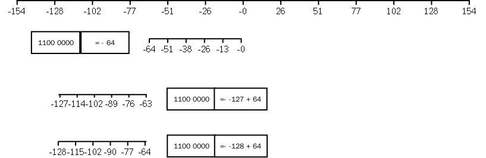

第一节 加法单元的实现
- 加法单元的实现。
图 14.1. 1-bit Full Adder

结果位：A B C三比特相加。
有进位的情况：A B 中一个1， C必为1 ； A B 中两个都是一。
- 多单元（比特）相加
图 14.2. 4-bit Ripple Carry Adder

- 不同进制间的转化
第二节 整型数编码
正数的表示
图 14.3. 正数表示
负数的表示
图 14.4. 负数数轴表示

计算机中数据以二进制存储
图 14.1. 1-bit Full Adder
图 14.2. 4-bit Ripple Carry Adder
图 14.3. 正数表示

图 14.4. 负数数轴表示
